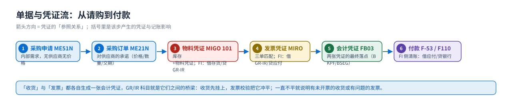

概念与定位
MM 是什么：三大职能、五类凭证、与邻居模块的分界
先回答三个问题：MM 到底管什么？它产出什么凭证？它的边界在哪里。
一句话定义
MM = Materials Management（物料管理）
管「物料的取得与持有」：买什么（采购）、有多少（库存）、花了多少钱（发票校验与物料评估）。它不负责卖（那是 SD），不负责造（那是 PP），但它的每一步动作都会在 FI 里留下会计凭证。
所以 MM 是典型的「业务前台 + 财务后台」双层模块：前台动作（请购/订单/收货/发票）产生物料凭证与发票凭证，系统再按后台配置的自动记账规则生成会计凭证。

三大职能
| 职能 | 管什么 | 典型前台事务 | 产出的凭证 |
|---|---|---|---|
| 采购 Purchasing | 需求 → 请购 → 询价/报价 → 采购订单 → 框架协议（合同/计划协议）→ 货源（信息记录/货源清单） | ME51N 请购 · ME21N 采购订单 · ME11 信息记录 | 采购申请、采购订单 |
| 库存管理 Inventory Management | 收货、发货、转储、库存类型与状态、盘点、库存总览；移动类型决定记账方式 | MIGO 收货 · MB1A 发货 · MB1B 转储 · MMBE 库存 | 物料凭证（+ 会计凭证） |
| 发票校验 Logistics Invoice Verification | 三单匹配（订单/收货/发票）、差异与容差、发票冻结与下达、后续借项贷项 | MIRO 输入发票 · MRBR 下达 · MIR4 显示 | 发票凭证（+ 会计凭证） |
五类凭证：MM 的「证据链」
| 凭证 | 谁产生 | 事务码 | 它的作用 | 对财务的影响 |
|---|---|---|---|---|
| 采购申请 Purchase Requisition | 需求部门 / MRP | ME51N | 内部需求，尚未对供应商承诺 | 无 |
| 采购订单 Purchase Order | 采购部门 | ME21N | 对供应商的承诺（价格、数量、交期） | 无（承诺，称「订单预算」） |
| 物料凭证 Material Document | 仓库 / 收货 | MIGO | 库存变动的原始凭证（101 收货 / 261 领料…） | 自动生成 FI 凭证：借存货、贷 GR/IR |
| 发票凭证 Invoice Document | 财务 / 采购 | MIRO | 记录供应商发票、校验差异 | 自动生成 FI 凭证：借 GR/IR、贷应付 |
| 会计凭证 Accounting Document | 系统自动 / 财务 | FB03 | 最终落到总账与应收应付 | — |
最容易混的一点「收货」不等于「付款」：收货先把钱挂在 GR/IR（材料采购） 中间科目上，发票校验才把 GR/IR 冲平、把应付立起来，真正的现金流出在 FI 的付款（
F-53/自动付款）。三张单据（订单、收货、发票）数量金额一致，账才平。凭证流向一张图
{kind=link}

与邻居模块的分界

| 情况 | 该找谁 |
|---|---|
| 要改销售订单的价格、交货期 | SD（VA02），MM 不管销售侧 |
| 要建物料主数据的销售视图/销售价格 | SD（MM01 里选销售视图 / VK11 条件） |
| 要建生产订单、看 BOM、报工 | PP（CO01/CS01/CO11N） |
| 费用要分摊到成本中心、内部订单 | CO（KB11N/KO88） |
| 供应商发票要付款、看应付余额 | FI（FB60 记应付 / F-53 付款 / FK10N 余额） |
| 会计科目要设置成「只能自动记账」 | FI 的 FS00（教材任务 29 就是这一步） |
12 个常见误解
| # | 常见说法 | 实际上 |
|---|---|---|
| 1 | 「采购订单保存了就占库存了」 | 订单不动库存，也不记账；它只是对供应商的承诺。库存和会计凭证在收货过账（101）时才产生。 |
| 2 | 「收货就付款了」 | 收货挂 GR/IR 中间科目；付款在 FI，需要发票校验 + 付款流程。 |
| 3 | 「库存地点可以随便填」 | 收货时必须选对库存地点（教材用 0001 仓库 / 0002 生产 / 0003 运输），它会写进物料凭证的库存地点字段，也是物料主数据库存地点视图的键。 |
| 4 | 「物料主数据建一次就够了」 | 物料主数据是分层的：基本数据（跨组织）→ 工厂层 → 存储地点层；评估类、价格控制这类字段会决定记账，缺了就收货失败。 |
| 5 | 「评估类无所谓」 | 评估类（教材用 3000 原材料/贸易商品、3100、7920）与工厂（评估范围）一起决定自动记账找哪个存货科目；教材还特别提示书里原来的评估类有误。 |
| 6 | 「移动类型只是编号」 | 移动类型决定：库存增减方向、是否产生 FI 凭证、用哪组科目（BSX/WRX/GBB）、是否更新数量/价值。101 收货、102 冲销、261 生产领料、301 工厂间转储… |
| 7 | 「发票金额比订单大一点没关系」 | 超容差会触发发票冻结（教材任务 32 配置了 14 个容差码），必须有人用 MRBR 下达才能付款。 |
| 8 | 「发票校验只看金额」 | MIRO 做的是三单匹配：数量（对收货）、金额（对订单）、税额；还要注意采购订单的收货行与发票行是否一一对应。 |
| 9 | 「采购组织就是采购部门」 | 采购组织（Y999）是一个法律/组织概念，决定物料主数据的采购视图与订单的归属；采购组（PG1/PG2）才是「哪个人/哪一组负责」。 |
| 10 | 「MRP 是 PP 的事」 | 教材里 MM 也运行 MRP（MD03 单层，任务 34），把安全库存缺口变成采购申请；BOM 展开要多层计划，那属于 PP。 |
| 11 | 「收货容差和发票容差是一回事」 | 不是：收货容差（B1/B2）管「定价数量 vs 订单数量」，发票容差管价格/数量/税额差异，配置的容差码完全不同。 |
| 12 | 「MM 的表不用看」 | 查问题几乎都落到表：EKKO/EKPO 订单、MSEG/MKPF 物料凭证、RSEG 发票行、EINA/EINE 信息记录、MBEW 物料评估。 |
教材画面（先建立整体印象）